Free ham radio logbook · Mac, Windows, Android, iPhone, iPadБесплатный журнал радиосвязей · Mac, Windows, Android, iPhone, iPad
The ham radio logbook
on your computer
and in your pocketЖурнал радиосвязей
на компьютере
и в кармане
Type a callsign — name, town, grid square, photo, distance and the weather at the other end appear by themselves. At home on the computer, in the field on the phone, even without internet.Набрали позывной — имя, город, локатор, фото, расстояние и погода у корреспондента уже на экране. Дома на компьютере, в поле на телефоне, даже без интернета.
No subscription, no cloud: your log and your passwords stay with you.Без подписок и без облака: журнал и пароли остаются у вас.
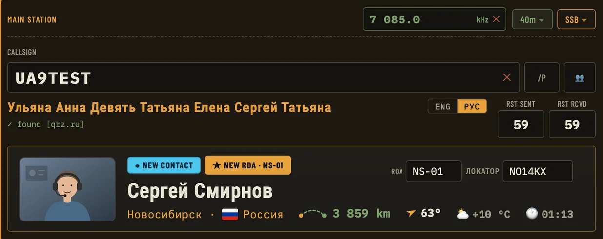
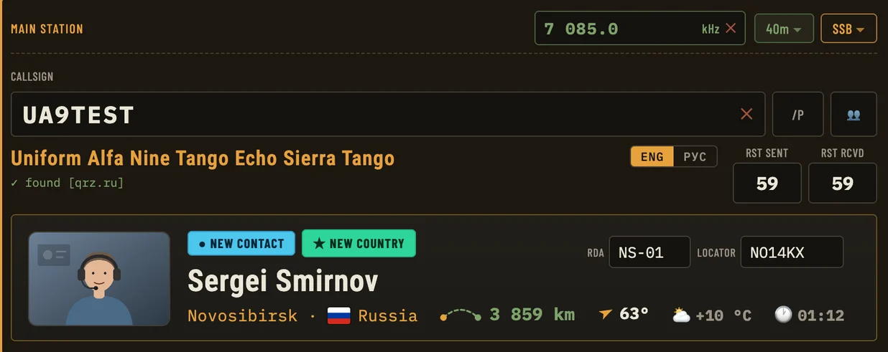
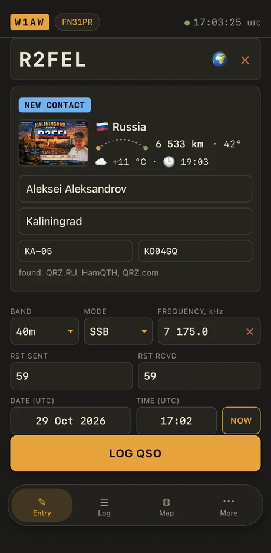
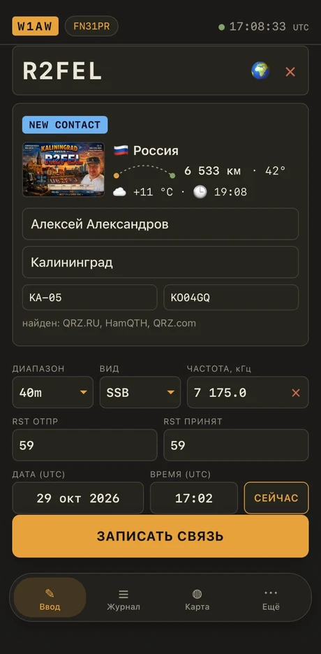
What's new in version Что нового в версии 1.0.10611 November 202611 ноября 2026
AddedДобавлено
- newновоеTransceiver over USB: FT-710 and FT-891 recording with CAT on, JTDX sets the digital mode itself (FT8 → DATA-U)Трансивер по USB: запись эфира с FT-710 при включённом CAT; JTDX сам ставит цифровой режим (FT8 → DATA-U)
- newновоеCAT: an "RTS line" option for radios that stay silent without it (FT-891 with CAT RTS = ENABLE)CAT: пункт «Линия RTS» для радио, которые без неё молчат (FT-891 при CAT RTS = ENABLE)
- newновоеLoTW without TQSL: a .p12 certificate file is enough (trial)LoTW без TQSL: достаточно файла сертификата .p12 (пробно)
- newновоеCW decoder: "text only", "+ callsigns", "+ meanings"Декодер телеграфа: «только текст», «+ позывные», «+ значения»
- newновоеIcom (CI-V) and Yaesu FT-1000MP over CAT — trial, feedback welcomeIcom (CI-V) и Yaesu FT-1000MP по CAT — пробно, нужны отзывы
FixedИсправлено
- fixedисправленоYaesu: digital mode was sent as RTTY-U and DATA-U was not read backYaesu: цифровой режим уходил как RTTY-U, а DATA-U не читался
- fixedисправленоCyrillic names no longer turn into "А…" in files for QRZ.comИмена кириллицей больше не превращаются в «А…» в файлах для QRZ.com
- fixedисправленоClear port error messages on Russian WindowsПонятные сообщения об ошибках порта на русской Windows
- fixedисправленоThe offline globe looks round when zoomed inОфлайн-глобус вблизи выглядит объёмным
- fixedисправленоThe TX-500 is now named correctly (ID 500)TX-500 теперь опознаётся и подписывается верно (ID 500)
Transceiver over USBТрансивер по USB
The program works with your transceiverПрограмма работает с вашим трансивером
Plug the cable in — the program works out by itself whether it is Yaesu or Kenwood.Подключаете кабелем — программа сама понимает, Yaesu это или Kenwood.
- Frequency and modeЧастота и вид — straight from the radio into the log windowиз трансивера в окно журнала
- Tuning from the programНастройка из программы — tap a spot, the radio followsщёлкнули по споту, трансивер перешёл
- PTT and the S-meterPTT и S-метр — right in the program windowпрямо в окне программы
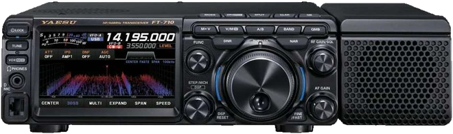
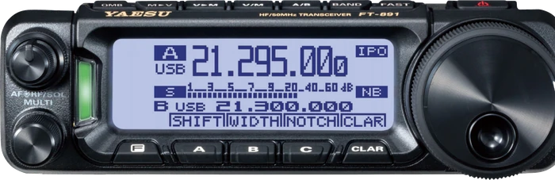
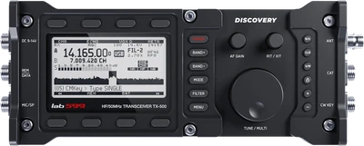
One log everywhereОдин журнал везде
Your phone finds the computer by itselfТелефон сам находит компьютер
Contacts made in the field arrive on the computer by themselves, and the log from the computer goes to the phone. No addresses, no keys to type.Связи, сделанные в поле, сами приезжают на компьютер, а журнал с компьютера — на телефон. Ни адресов, ни ключей вводить не нужно.
- 1Run the program on the computerЗапустите программу на компьютереNo need to open any settings — it just has to be running.Заходить в настройки не нужно — достаточно, чтобы она была открыта.
- 2Open the app on the phoneОткройте приложение на телефонеMore → Sync with computer → your computer appears; tap it.«Ещё» → «Синхронизация» → найдётся ваш компьютер, нажмите на него.
- 3Press “Allow” on the computerНажмите «Разрешить» на компьютереOnce. After that the phone remembers the computer and finds it again by itself, even if its address changes.Один раз. Дальше телефон запомнит компьютер и найдёт его сам, даже если адрес сменится.
In your pocketВ кармане
Trips, the field, the dacha — your log is always with youВыезд, поле, дача — журнал всегда с вами
Logging needs no network: the callbooks fill in the details later. Dark and light themes, Russian and English.Запись связи не требует сети: справочники дописывают данные потом. Тёмная и светлая тема, русский и английский.
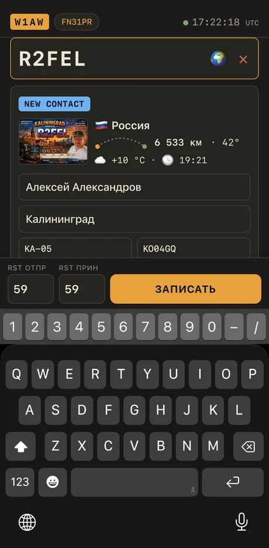
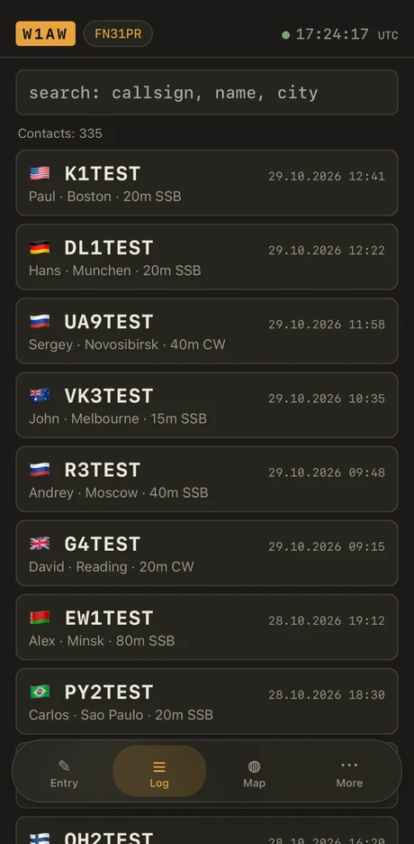
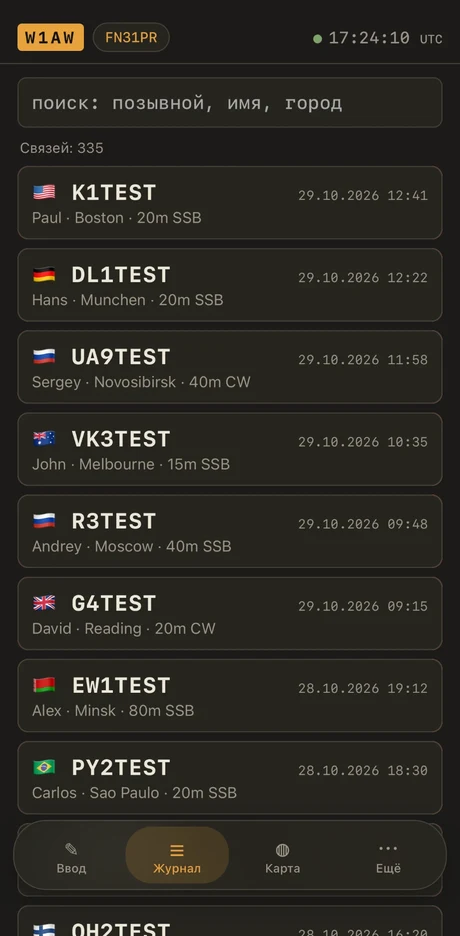
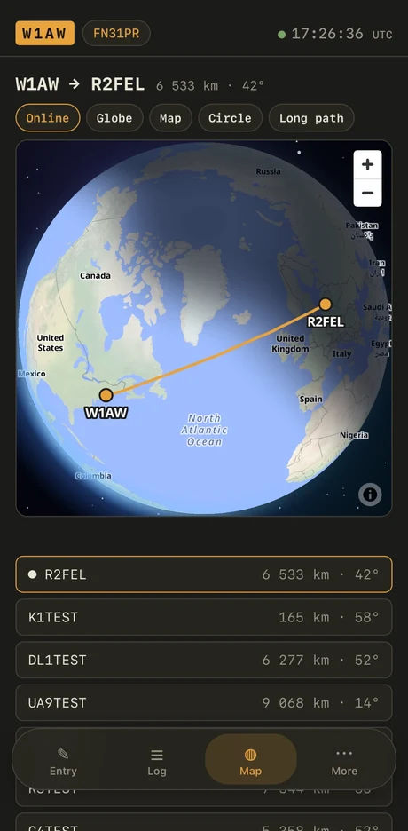
On the computerНа компьютере
The window that does the workОкно, которое работает за вас
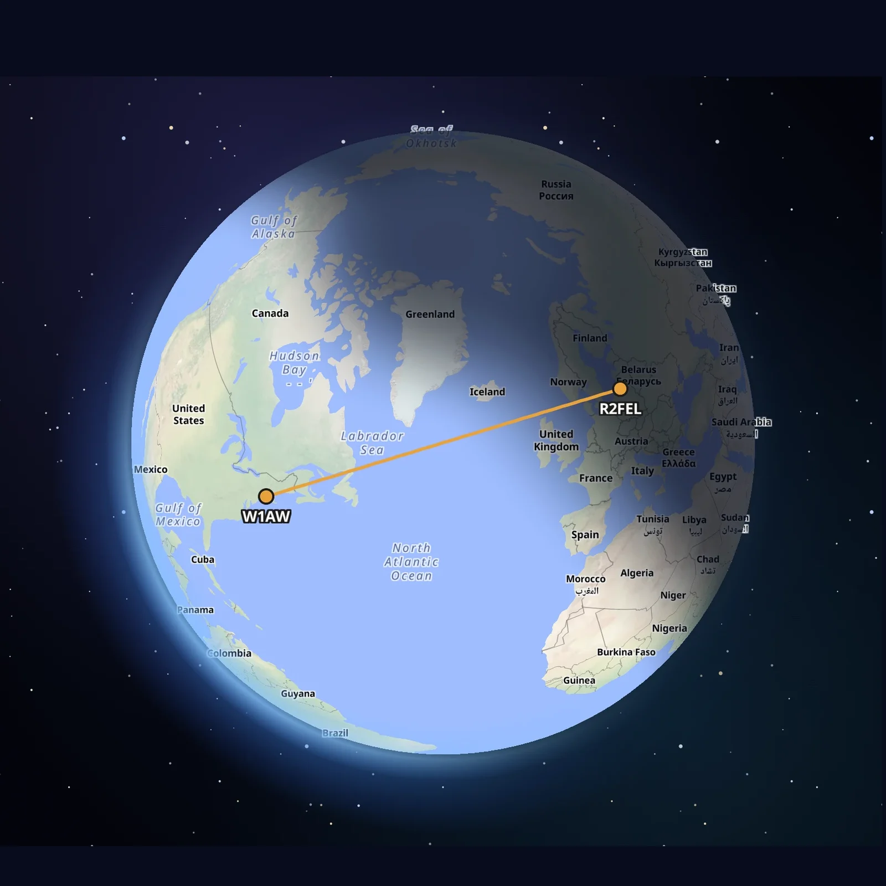
6 533 km · 42°- Its own windowОтдельное окноIt opens beside the program, not inside it — put it on a second screen.Открывается рядом с программой, а не внутри неё — можно вынести на второй монитор.
- Always on top of the programВсегда поверх программыIt stays above the logbook, never above other apps.Держится поверх журнала, но не поверх чужих программ.
- Grows as you stretch itРастёт вместе с окномStretch the window and the globe grows with it.Растянули окно — вместе с ним растёт и глобус.
- Short and long pathКороткий и длинный путьThe great-circle arc, the distance and the heading — one press for the long way round.Дуга большого круга, расстояние и азимут — одним нажатием и длинный путь.
The essentialsГлавное в программе
Everything you need at the mic and the keyВсё, что нужно у микрофона и ключа
Nine things people choose the program for. The rest is in the line below.Девять вещей, ради которых программу выбирают. Остальное — в строке ниже.
Three callbooks at onceТри справочника сразу
QRZ.RU, HamQTH and QRZ.com. Name, town, grid square and RDA district fill in by themselves.QRZ.RU, HamQTH и QRZ.com. Имя, город, локатор и район RDA подставляются сами.
A globe in its own windowГлобус в своём окне
Both stations, the arc, day and night. It grows with the window and works offline.Обе станции, дуга, день и ночь. Растёт вместе с окном, работает и без сети.
Colour marks, as in JTDXЦветные метки, как в JTDX
New station, new country, new band — seen at a glance before you call.Новая станция, новая страна, новый диапазон — видно с первого взгляда, ещё до вызова.
Digital contacts arrive by themselvesСвязи из JTDX приходят сами
Pick a station in JTDX or WSJT-X: the callsign appears in the form and the callbooks fill in the rest. Press Log QSO there and it is in the log.Выбрали станцию в JTDX или WSJT-X — позывной появился в форме, справочники подставили остальное. Нажали там Log QSO — связь в журнале.
The transceiver, straight from USBТрансивер прямо по USB
Frequency, band and mode come from the radio itself, and the S-meter sits in the header. A spot or Enter tunes it. Yaesu and Kenwood-compatible radios (FT-710, FT-891, TX-500).Частота, диапазон и вид идут с самого трансивера, S-метр — в шапке. Спот или Enter — и он перестроен. Yaesu и Kenwood-совместимые (FT-710, FT-891, TX-500).
Entries for contestsОтчёты для соревнований
Cabrillo for HF contests, EDI(RU) for VHF — with the gear, the operators and a file per band. The VHF one was checked against the ALRS robot.Cabrillo для КВ-тестов, EDI(RU) для УКВ — с техникой, операторами и файлом на каждый диапазон. УКВ-отчёт проверен у робота АЛРС.
DX cluster and CW decoderDX-кластер и декодер CW
Spots go into the form with one click. Morse is read from the microphone in Latin letters, with abbreviations explained.Споты одним нажатием в форму. Телеграф читается с микрофона на латинице, с расшифровкой сокращений.
LoTW, eQSL, QRZ.com, award.srr.ruLoTW, eQSL, QRZ.com, award.srr.ru
Send and check confirmations with one button. Files for HAMLOG and QRZ.com. QSL cards by e-mail.Отправка и проверка подтверждений одной кнопкой. Файлы для HAMLOG и QRZ.com. Карточки по e-mail.
Russian mode and four themesРусский режим и четыре темы
One switch makes the whole program Russian — menus, hints, dates and names. Amber, graphite, grey and light themes.Одна кнопка делает программу русской — меню, подсказки, дату и имена. Темы: янтарная, графит, серая, светлая.
And also: four themes · log columns the way you want · duplicates and “worked before” · ADIF, Cabrillo and EDI · backups · POTA and contests · pileups · QSL cards · weather and time at the other end.И ещё: четыре темы · колонки журнала под себя · двойники и «уже работали» · ADIF, Cabrillo и EDI · резервные копии · POTA и контест · пайлап · QSL-карточки · погода и время у корреспондента.
Made by one ham, for hamsСделано одним радиолюбителем — для радиолюбителей
R2FEL HamLog is free and always will be. Every new feature, every fix and every night of testing is one person’s time. If the program saves you minutes at the key, you can say thanks — any amount, even the smallest, keeps it going.R2FEL HamLog бесплатный и таким останется. Каждая новая функция, каждое исправление и каждая ночь проверок — время одного человека. Если программа экономит вам минуты у ключа, можно сказать спасибо: любая сумма, даже самая маленькая, помогает ей жить.
VideoВидео
Reviews by RU2FACОбзоры от RU2FAC
R2FEL HamLog,
seen by RU2FACR2FEL HamLog
глазами RU2FAC
A fellow ham went through the phone app and the computer program on camera and shows how they work. The videos are in Russian and live on his YouTube channel, Imran Expert.Радиолюбитель RU2FAC на камеру проходит по мобильному приложению и компьютерной программе и показывает, как они работают. Видео на его канале Imran Expert.
Installing on the phoneУстановка на телефонfreeбесплатно
The phone app is free, with no ad networks and no banners. It logs contacts in the field, looks callsigns up, shows the map and syncs with the computer program over your home Wi-Fi.Телефонное приложение бесплатное, без рекламных сетей и баннеров. Записывает связи в поле, ищет позывные, показывает карту и синхронизируется с компьютерной программой по домашнему Wi-Fi.
Why not from the App Store or Google Play?Почему не из App Store и Google Play?
Short answer: the stores charge the developer and set conditions, and this is a free hobby program made by one ham. Today it is simply not worth it for a free app that earns nothing.Коротко: магазины берут плату с разработчика и ставят свои условия, а это бесплатная программа одного радиолюбителя. Пока для бесплатного приложения, которое ничего не зарабатывает, это просто не окупается.
Details. Apple asks for a paid developer account every year and checks every update; Google Play asks for a fee, a verified identity and test periods. Both stores also want the right to decide what an app may do. Apps installed straight from a file are normal on Android and possible on iPhone, they just need a few more steps from you.Подробнее. Apple берёт плату за аккаунт разработчика каждый год и проверяет каждое обновление; Google Play требует взнос, подтверждение личности и тестовые периоды. Оба магазина ещё и решают, что приложению можно делать. Приложения, установленные из файла, — обычное дело на Android и возможное на iPhone, просто от вас нужно чуть больше шагов.
Is it safe? Take the file only from this page. The app has no ad networks and does not look into your log. At most it shows one short sponsor screen at launch, and only when the author switches it on. Your log stays on the phone; callbooks, weather and maps are asked by the phone itself only when you use them — the same as in the computer program (see “Your data” below). Android says “unknown app” just because it is not from Google Play.Это безопасно? Берите файл только с этой страницы. В приложении нет рекламных сетей, и оно не заглядывает в ваш журнал. Максимум — одна короткая заставка спонсора при запуске, и только если автор её включил. Журнал хранится на телефоне; справочники, погоду и карты телефон спрашивает сам и только когда вы ими пользуетесь — как и компьютерная программа (см. «Ваши данные» ниже). Android пишет «неизвестное приложение» только потому, что его нет в Google Play.
Why iPhone and iPad are harder. Apple allows apps only from its store or signed by a developer account. Sideloadly signs the file with your own free Apple ID, and a free signature lasts 7 days. With a paid developer account that limit would go away — and if the app finds enough users, the author will consider that and the store.Почему на iPhone и iPad сложнее. Apple разрешает приложения только из своего магазина или подписанные аккаунтом разработчика. Sideloadly подписывает файл вашим собственным бесплатным Apple ID, а бесплатная подпись держится 7 дней. С платным аккаунтом разработчика это ограничение исчезло бы — и если у приложения появится достаточно пользователей, автор подумает и об этом, и о магазине.
Updates. A new version is installed over the old one from this page; the log stays.Обновления. Новая версия ставится поверх старой с этой страницы, журнал сохраняется.
Android — 1 minuteAndroid — 1 минута
- Download the file with the Android button at the top of this page (on the phone itself).Скачайте файл кнопкой «Android» вверху страницы (прямо на телефоне).
- Open it. The phone asks to allow installing from this source — allow it.Откройте его. Телефон спросит разрешение на установку из этого источника — разрешите.
- If Play Protect says the app is unknown, press Install anyway (it is not in the store).Если Play Protect пишет, что приложение неизвестно, нажмите «Всё равно установить» (в магазине его нет).
- A new version: install the new file over the old one — the log stays.Новая версия: установите новый файл поверх старого — журнал сохранится.
iPhone and iPad — need a computeriPhone и iPad — нужен компьютер
- On a Mac or Windows PC install the free Sideloadly and follow its own instructions (Windows needs iTunes from Apple).На компьютере (Mac или Windows) поставьте бесплатную программу Sideloadly и следуйте её инструкции (для Windows нужен iTunes с сайта Apple).
- Download the file with the iPhone button at the top of this page, connect the iPhone or iPad by cable, press “Trust”.Скачайте файл кнопкой «iPhone» вверху страницы, подключите iPhone или iPad кабелем, нажмите «Доверять».
- Drag the file into Sideloadly, enter your free Apple ID when it asks, press Start.Перетащите файл в Sideloadly, введите свой бесплатный Apple ID, когда спросит, нажмите Start.
- On the iPhone or iPad: Settings → General → VPN & Device Management → trust your Apple ID; on iOS 16+ also Settings → Privacy & Security → Developer Mode.На iPhone или iPad: Настройки → Основные → VPN и управление устройством → доверять вашему Apple ID; на iOS 16 и новее ещё Настройки → Конфиденциальность и безопасность → Режим разработчика.
Honestly:Честно: a free Apple ID signature lasts 7 days. Then the app stops opening — install the file again the same way, over the old one. Before that, export your log (More → Export ADIF). A paid Apple developer account would remove this limit.бесплатная подпись Apple ID держится 7 дней. Потом приложение перестаёт открываться — поставьте файл заново тем же способом, поверх старого. Перед этим выгрузите журнал («Ещё» → «Выгрузить ADIF»). Платный аккаунт разработчика Apple снимает это ограничение.
Getting startedПервые шаги
Callsign lookupПоиск позывных
Needs free XML API access at QRZ.RU and/or a free HamQTH account. The manual inside the program (F1) explains how to get both.Нужен бесплатный доступ к XML API QRZ.RU и/или бесплатный аккаунт HamQTH. Как их получить — в инструкции внутри программы (F1).
Thank you, testersСпасибо тестировщикам
Thank you,
testersСпасибо,
тестировщики
Every build installed, logs and bugs sent — the program is better for it.Каждую сборку поставили, журналы и ошибки прислали — программа стала лучше.
R2FEL HamLog grew out of other hams' real logs and honest bug reports. These people installed every unfinished build, sent their logs and debug files, and said plainly what did not work.R2FEL HamLog вырос из настоящих журналов радиолюбителей и честных сообщений об ошибках. Эти люди ставили каждую недоделанную сборку, присылали журналы и файлы отладки и прямо говорили, что не работает.
Your dataВаши данные
Nothing from your log leaves your computerНичего из журнала не уходит с компьютера
Callbooks and weather are asked only while you type a callsign (the sun and band data once an hour, with a request that is the same for everyone). LoTW, eQSL, HAMLOG and award.srr.ru — only when you press the button; the DX cluster only when you press Connect (the node you pick sees your callsign, which is how clusters sign you in). The nearest POTA parks are asked from pota.app only when you press 📍 with the park fields on — your coordinates go with that request. Photos of stations are downloaded from the same callbooks, and a background run asks them, one callsign at a time, about the callsigns in your log. The globe is off by default; its map comes from OpenFreeMap, which sees which areas of the world are shown — no callsigns, no log. The microphone of the Morse decoder is yours alone — the sound never leaves the program. The settings backup, if you turn it on, lands in the folder you choose; its logins are plain text, so keep it off a cloud folder or switch them off. Once a day the program checks for a new version and tells the author just the country, version, system and language — no callsign, no contacts. You can switch that off in settings. This site counts visits the same way — the day, the country, where you came from — with no cookies and nothing about you personally.Справочники и погода спрашиваются, только пока вы вводите позывной (данные о Солнце и прохождении — раз в час, запросом, одинаковым для всех). LoTW, eQSL, HAMLOG и award.srr.ru — только по нажатию кнопки; DX-кластер — только по кнопке Connect (узел, который вы выбрали, видит ваш позывной — так кластеры вас впускают). Ближайшие парки POTA запрашиваются с pota.app только по нажатию 📍 при включённых полях парков — с запросом уходят ваши координаты. Фото станций скачиваются с тех же справочников, а фоновый обход спрашивает у них, по одному позывному за раз, позывные вашего журнала. Глобус по умолчанию выключен; карта берётся с OpenFreeMap, который видит, какие места мира показаны, — ни позывных, ни журнала. Микрофон декодера телеграфа принадлежит только вам — звук из программы не уходит. Копия настроек, если вы её включили, ложится в выбранную вами папку; логины в ней открытым текстом, поэтому не кладите её в облачную папку или выключите логины. Раз в сутки программа проверяет, не вышла ли новая версия, и сообщает автору только страну, версию, систему и язык — ни позывного, ни связей. Это выключается в настройках. Сам сайт считает посещения так же обезличенно: день, страна, откуда пришли, — без cookie и без чего-либо о вас лично.
Write to the authorНаписать автору
A question, an idea or a bug — write here, right on the page. No address to type, no account.Вопрос, идея или ошибка — напишите прямо здесь, на странице. Адрес вводить не нужно, регистрироваться тоже.